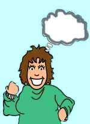
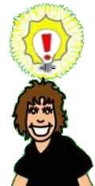
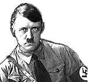

| Ethics Dictionary | Conditions Formulas | PTS Glossary | FAQs |
|
|
| Ethics Dictionary | Conditions Formulas | PTS Glossary | FAQs | |
Note: This chapter is from 'The Road to Clear", Level 4 Pro.
PTS Tech - Basic
Definitions
The Definitions of PTS C/S One

(This is often called PTS C/S Instruction No One as it is the first thing to do before the actual handling of any PTS situation).
AFFINITY
Degree of liking or affection or lack of it. Affinity is a tolerance of
distance. A great affinity would be a tolerance of or liking of close proximity.
A lack of affinity would be an intolerance of or dislike of close proximity.
Affinity is one of the components of understanding; the other components being
reality and communication.

REALITY
The degree of agreement reached by two ends of a communication line. In essence,
it is the degree of duplication achieved between cause and effect. That which is
real is real simply because it is agreed upon, and for no other reason.

COMMUNICATION
"The interchange of ideas or objects between two people or terminals. More
precisely the definition of communication is the consideration and action of
impelling an impulse or particle from source point across a distance to receipt
point, with the intention of bringing into being at the receipt point a
duplication and understanding of that which emanated from the source point.
"The formula of communication is: Cause, Distance, Effect, with Intention,
Attention and Duplication with Understanding." "Communication by
definition does not need to be two-way. Communication is one of the component
parts of understanding."
ARC TRIANGLE,
1. it is called a triangle because it has three related points: affinity,
reality and the most important, communication. Without affinity there is no
reality or communication. Without reality or some agreement, affinity and
communication are absent. Without communication, there can be no affinity or
reality. It is only necessary to improve one corner of this very valuable
triangle in Scn in order to improve the remaining two corners. The easiest
corner to improve is communication: improving one’s ability to communicate
raises at the same time his affinity for others and life, as well as expands the
scope of his agreements. 2. this triangle is a symbol of the fact that affinity,
reality, and communication act together as a whole entity and that one of them
cannot be considered unless the other two are also taken into account.
ARC BREAK
A sudden drop or cutting of one's affinity, reality, or communication with
someone or something. Upsets with people or things come about because of a
lessening or cut off of affinity, reality, communication or understanding. It's
called an ARC break instead of an upset, because, if one discovers which of the
three points of understanding have been cut, one can bring about a rapid
recovery in the person's state of mind. It is pronounced by its letters A-R-C
break.

PROBLEM
Anything which has opposing sides of equal force; especially
postulate-counter-postulate, intention-counter-intention or idea-counter-idea;
and intention-counter-intention that worries the preclear.
PRESENT TIME
PROBLEM
1. is a situation that has its elements in the material universe in
present time, which is going on now, and which would demand the preclear’s
attention to such a point where he would feel he had better be doing something
about it rather than be audited. 2. Any worry that keeps a pc out of
session, which worry must exist in present time in the real universe.

OVERT
1. An aggressive or destructive act by the individual against one or more of the
eight dynamics (self, family, group, mankind, animals or plants, mest, life or
the infinite).
2. That thing which you do which you aren't willing to have happen to you.

WITHHOLD
An undisclosed harmful (contra-survival) act.

MISSED WITHHOLD
An undisclosed contra-survival act which has been restimulated by another but
not disclosed. This is a withhold which another person nearly found out about,
leaving the person with the withhold in a state of wondering whether his hidden
deed is known or not.
 |
 |
|
"Mind over Matter" or causative thinking |
|
POSTULATE
1. To conclude, decide or resolve a problem or to set a pattern for the future
or to nullify a pattern of the past. (Example: New years resolutions).
2. That self-determined thought which starts, stops or changes past, present
or future efforts.
3. In ST the word postulate means to cause a thinkingness or consideration.
It is a technical definition and is defined as causative thinkingness.
COUNTER-
1. (Prefix) Opposition, as in direction or purpose; for example
counter-proposal, counter-act.
 |
 |
HOSTILE
1. Characteristics of an enemy.
2. Feeling or showing characteristics of an enemy; antagonistic.
ANTAGONISM
1. Mutual resistance; opposition; hostility.
2. The condition of being an opposing force, factor or principle.
 |
 |
|
Antagonistic terminals (AT's) to some pc's |
|
ANTAGONISTIC TERMINAL
1. A person or group opposed to the pc or what the pc is doing. This can be due
to a number of factors. Misunderstandings, cross-purposes, hate, opposite
convictions, but can also include situations where the pc is actually provoking
the person in some way to antagonize him. Such a terminal could be called a
Suppressive Person but this term is very loaded and often inaccurate and
problematic. Often pc's will have one of their parents as their Antagonistic
Terminal. The parent is usually well-intended but the relationship has gone bad.
Since we are handling the pc and not the Antagonistic Terminal there is no need
to pass judgment on his state of case or basic motivations. The pc can go PTS to
an Antagonistic Terminal and it would be handled with standard PTS tech.
2. A possible Suppressive Person, but his state of case and motivations not
determined.
3. A person or group antagonistic to the pc, but with no real thought of
"doing the pc in", "weave a web" or any such thing. He is
simply opposed to the pc and fighting him in some way. Such a terminal on the
pc's case is best dealt with using PTS tech.
4. An AT is simply a person or group that, to be correctly handled on the case,
has to be addressed with PTS tech. Antagonistic terminals (AT's) to some pc's
look like their family album with a dominating spouse or parent on top of
the list. List "usually includes father, mother, wife or wives, husband,
brothers, sisters, aunts, uncles, grandparents, lovers". ( Quote from PTS
RD).
 |
Discipline and Punishment are not |
SUPPRESS
1. To squash, to sit on, to make smaller, to refuse to let reach, to make
uncertain about his reaching, to render or lessen in any way possible by any
means possible. To the harm of the individual and for the fancied protection of
a suppressor.
 |
 |
|
Suppression can be done by overwhelming |
|
SUPPRESSION
1. Suppression is "a harmful intention or action against which one cannot
fight back." Thus when one can do anything about it, it is less
suppressive.

SUPPRESSIVE PERSON
1. A person with certain behavior characteristics and who suppresses other
people in his vicinity and those other people when he suppresses them become PTS
or potential trouble sources.
2. A person who has had a counter-postulate to the pc you are handling (see
Antagonistic Terminal).

SUPPRESSIVE GROUPS
1. A group acting as an AT on the pc's case.
2. Are defined as those which seek to destroy Scn or which specialize in
injuring or killing persons or damaging their cases or which advocate
suppression of mankind.
ROLLER-COASTER
1. A case that betters and worsens. A roller-coaster is always connected to a
suppressive person and will not get steady gains until the suppressive is found
on the case or the basic suppressive person earlier. Because the case doesn't
get well he or she is a potential trouble source to us, to others and to
himself.
2. Case gets better, gets worse, gets better, gets worse.
|
 |
 |
|
Symptoms of PTS: Roller-coastering, accidents, |
||
POTENTIAL TROUBLE SOURCE
1. Somebody who is connected with an SP who is invalidating him, his beingness,
his processing, his life, or even his group. It is a technical thing. It results
in illness and roller-coaster and is the cause of illness and roller-coaster.
2. The PTS guy is fairly obvious. He's here, he's way up today and he's way
down tomorrow and he gets a beautiful session and then he gets terribly ill.
That's the history of his life.
3. The mechanism of PTS is environmental menace that keeps something
continually keyed-in. This can be a constant recurring somatic or continual,
recurring pressure or a mass. The menace in the environment is not imaginary in
such extreme cases. The action can be taken to key it out. But if the
environmental menace is actual and persists it will just key-in again. This
gives recurring pressure unrelieved by usual processing.
 |
Search & Discovery is a |
SEARCH AND DISCOVERY
1. Search and discovery of suppression is called an "S and D." It
locates the suppressive on the case.
"Remember that the real suppressive person (SP) was the one that wove a
dangerous environment around the pc. To find that person is to open up the pc's
present time perception or space. It's like pulling a wrapping of wool off the
pc.
"The SP persuaded or caused the pc to believe the environment was dangerous
and that it was always dangerous and so made the pc pull in and occupy
less space and reach less.
"When the SP is really located and indicated the pc feels this impulse not
to reach diminish and so his space opens up.
"The difference between a safe environment and a dangerous environment
is only, that a person is willing to reach and expand in a safe environment and
reaches less and contracts in a dangerous environment.
"An SP wants the other person to reach less. Sometimes this is done by
forcing the person to reach into danger and get hurt so that the person will
thereafter reach less.
"The SP wants smaller, less powerful beings. The SP thinks that if another
became powerful that one would attack the SP.
"The SP is totally insecure and is battling constantly in covert ways to
make others less powerful and less able."
|
|
|
|
|